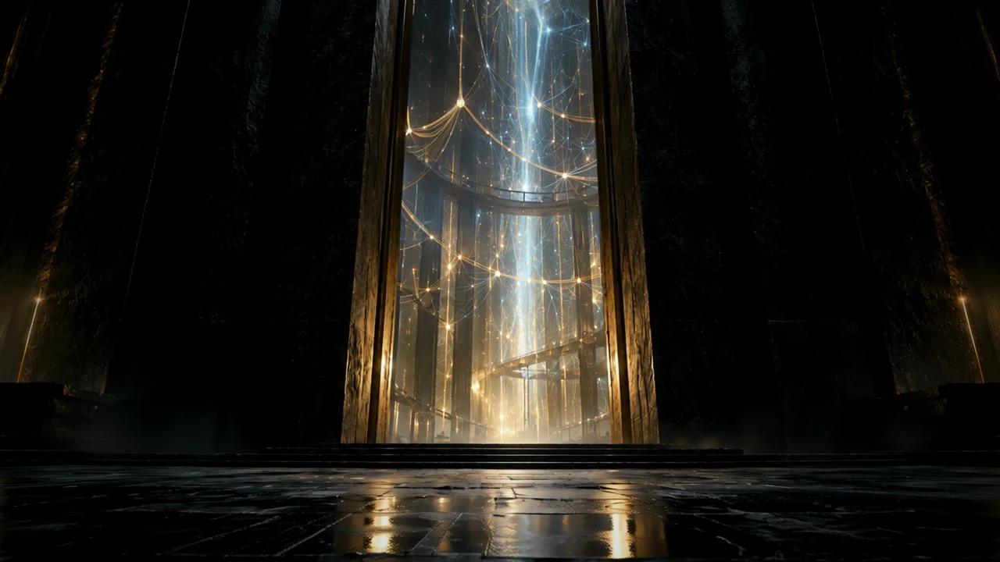

PUBLIC RECORDS. INSPECTABLE RELATIONSHIPS.
The evidence
behind the
decision.
Follow contracts, capital and institutional relationships to the records that support them. Keep the sources, the dates and the limits in view.
Built to inspect. Designed to carry forward.
01 / OPEN THE RECORD
A claim is only the beginning.
Select a public case record. Follow its source. Export the same evidence, with its qualifications intact.
not people to an allegation.Dated source snapshot
Opening the public evidence…
The existing explorer remains available while this view loads.
Open explorer ↗An existing public case, presented with its original status. The underlying investigation remains review-required. This page adds no claim approval.
02 / CONTINUE THE WORK
What survives the next session?
The source, the judgment and the execution history. Each component keeps its own responsibility; the interface connects them.
Keep the record attached to the claim.
Typed evidence, dated relationships and explicit gaps remain inspectable. A stronger visual presentation changes neither the source nor its standing.
OBSERVED LOCAL EXECUTION / 02 NOV 2026
Run once.
Reuse what still holds.
Replay the recorded cold run, checked reuse, and changed inspection. These are retained results, not a live background job.
Inspect the execution summary ↗The same native procedure runs on Linux and Windows. Process completion and evidence acceptance remain separate.

CANTOS / THE BODY OF WORK
Keep what
we learn.
Clifford is an instrument within a larger practice: preserve evidence, retain the reasoning that exists, and make useful work reproducible.
Enter Cantos ↗Original Cantos v23 film. A web delivery derivative of the retained 31-second cut.03 / BRING THE EVIDENCE INTO YOUR WORKFLOW
A practical first path
for Integrity.ai.
Inspect the source-backed record before deciding how it belongs in a registry. The evidence travels; the consumer's scoring authority stays with the consumer.
One review inbox.
All the qualifications.
Download the worked case as structured records. Native evidence classes, dates, sources and financial types remain attached. Dimension, polarity, weight and registry status stay unset.
A review export candidate, not an accepted Integrity.ai import or a continuously refreshed feed.
Opening the source-backed export…No invented score. No silent status upgrade.
04 / WIDEN THE VIEW
The wider public record.
One research lens
Read left to right: policy and model production, workflow admission, activation spend, and measurement feedback. An Edge is not an allegation: each mark opens the source records behind its count.
The corpus documents activation spend, but no joined receipt connects that spend to a measured outcome. The effect on the public is not observed in this corpus. The gap remains open.
About this datasetBuild identity, not source freshness
Projection timestamps identify deterministic artifacts; source dates remain in their owning receipts.